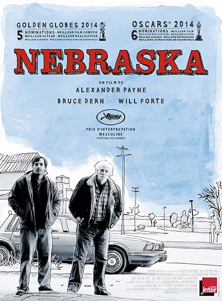
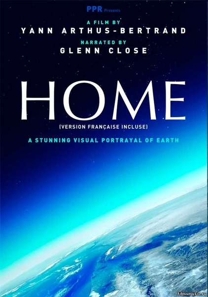
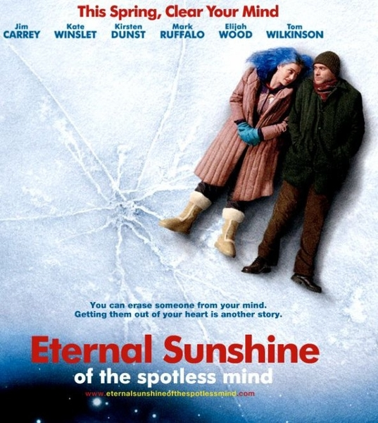
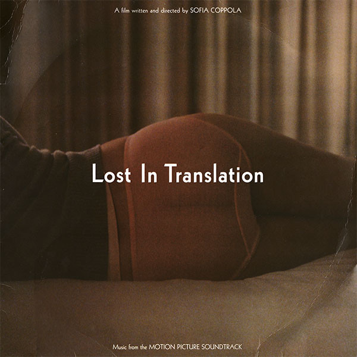
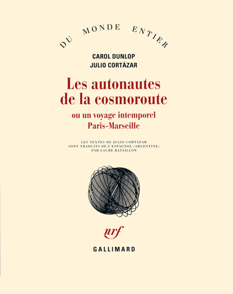
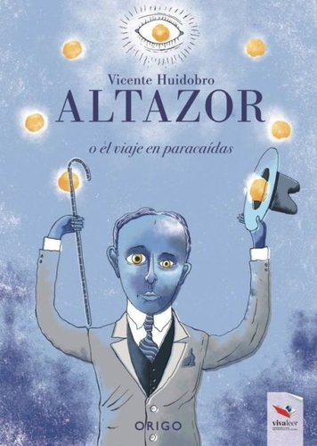
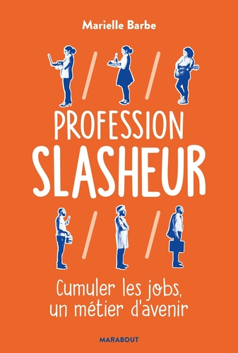
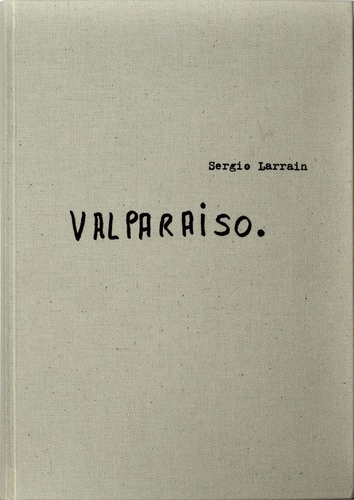

I'm Chilean, living in France. Former biochemist now I want to design websites & cool stuff . Learning one skill at a time, after some weeks learning to git, Ruby & databases (SQL, ActiveRecord), HTML, CSS, Bootstrap & some Javascript, we did a Rails app that you can find here.
When I'm not coding, or trying to spend quality time with my family, I love to take photos, watch a good'ol super-heroes movie, read or paint with watercolors. In fact, one day, I would love to write & illustrate a children's book. I'm a big dreamer.
Github Linkedin Portfolio|  |
Nebraska (2013)As a photography-lover I couldn't help but I have to put this movie on the top of my list. Is a black&white movie, with awesome photography and a heartbreaking story about an old man travelling to Nebraska, USA, to claim a million-dollar prize. |
The Artist (2011)Another black&white movie (I guess you can see a trend here) which is also a silent movie. Really nice actoral game and a story about the transition onto the talking-pictures movies in the mid-to-late-1920s. |
|
|  |
Home (2009)A Yann Arthus-Bertrand's film which depicts the state of our planet Earth using aerial footage from more than fifty countries around the world. |
|  |
Eternal Sunshine of the Spotless Mind (2004)A couple falls in love, and suddenly one of them decide to follow a "pseudo-medical" procedure to erase the other from their memories. Or how you are condemned to fall in love in a no-exit-way. |
|  |
Lost in Translation (2003)You are in Tokyo and you don't speak japanese. You are (almost) alone. You are lost in translation. How do you find yourself again? |
|  |
Les autonautes de la cosmoroute ou Un voyage intemporel Paris-Marseille - Julio Cortázar & Carol Dunlop.Written at four hands by an Argentine writer and his Canadian wife, their travel is an atemporal-exploratory journey from Paris to Marseille. Love, illness, and surrealism in a Wolkswagen Kombi. And "cronopios", lots of them. |
|  |
Altazor - Vicente Huidobro Another book in spanish! I'm sorry but is a magnificent poet from my country. |
|  |
Profession Slasheur - Marielle BarbeA new way to understand the atypical professional profiles and the changing concept of work. If you never feel comfortable when someone asks you "What do you do for a living?", maybe this book is for you. |
|  |
Valparaíso - Sergio LarraínThe Chilean photographer, Sergio Larrain, affiliated to Magnum agency, published his most noteworthy work in the book, Valparaiso. Using handwritten notes, letters, and drawings he share his singular vision of the world. After a decade of work as a profesional photographer and very moved for what he saw in the Algerian War, he decided to return to live in the north of Chile, secluded and anonymous, meditating and not doing photographies anymore. |